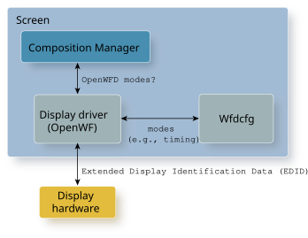

The Wfdcfg library provides the modes and attributes of your display hardware to your display driver and Screen.
Your display driver (WFD driver) is the primary user of the Wfdcfg library, but the composition manager component in Screen also uses the modes and attributes from the Wfdcfg library.
The composition manager accesses the OpenWFD modes and attributes from the Wfdcfg library through the WFD driver. Based on this information, the composition manager tells the WFD driver which OpenWFD mode to use.

Some WFD drivers also probe the display hardware for extended display identification data (EDID). This information is consolidated and provided to the composition manager.